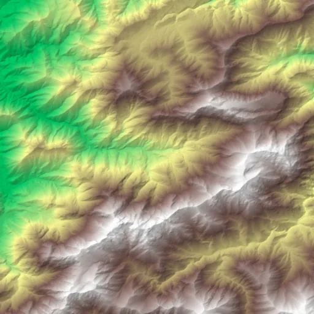

Benchmark / Near-lossless / cop-dem-glo30 / cop-dem-glo30-05
cop-dem-glo30-05
toubkal · 2011-01-01 · sample details

Metadata
| id | cop-dem-glo30-05 |
|---|---|
| source | Copernicus DEM GLO-30 (2021 release), AWS open data |
| asset | https://copernicus-dem-30m.s3.amazonaws.com/Copernicus_DSM_COG_10_N31_00_W008_00_DEM/Copernicus_DSM_COG_10_N31_00_W008_00_DEM.tif |
| crs | EPSG:4326 |
| transform | -7.921250000000001 0.0002777777777777778 0.0 31.22125 0.0 -0.0002777777777777778 |
| datetime_start | 2011-01-01T00:00:00Z |
| datetime_end | 2015-12-31T23:59:59Z |
| bands | elevation |
| shape | 512x512 |
| dtype | float32 |
| unit | m |
| scale | 1 |
| offset | 0 |
| input_sha256 | 960c405336919534cfb92137ecf7dc1f40fe8b478f2ca068bb24e30937a24426 |
| site | toubkal |
| regime | mountain |
| lon | -7.85 |
| lat | 31.15 |
| tile | Copernicus_DSM_COG_10_N31_00_W008_00_DEM |